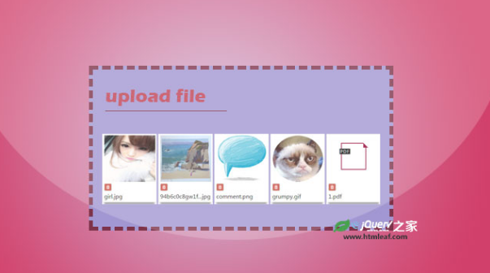

下拉&表單
-
go -
基於Bootstrap 3可預覽的HTML5文件上傳插件
bootstrap-fileinput是一款基於Bootstrap 3.x的HTML5文件上傳插件。該文件上傳插件帶有預覽圖效果，可同時選擇多個文件。該插件使用bootstrap CSS3樣式來製作文件上傳界面。並且它提供了多國語言，你可以選擇使用中文。 go -
支持ajax的jquery自動完成插件
這是一款輕量級的jquery自動完成插件。該jquery自動完成插件支持ajax。用戶在輸入框中輸入內容時，插件會自動搜索指定的數組對象，或json對象，完成自動補全。 go -
quill.js-強大的現代富文本編輯器插件
quill.js是一款強大的現代富文本編輯器插件。該富文本編輯器插件支持所有的現代瀏覽器、平板電腦和手機。它提供了文本編輯器的所有功能，並為開發者提供大量的配置參數和方法。 go -
go -

基於Bootstrap的強大jQuery表單驗證插件
formvalidation是一款功能非常強大的基於Bootstrap的jQuery表單驗證插件。該jQuery表單驗證插件內置了16種表單驗證器，你也可以通過Bootstrap Validator's APIs寫自己的表單驗證器。 go -

下拉列表
用於將選擇投入一些簡單的擴大效應的下拉列表 go -
自定義登錄表單樣式
一些現代的和創造性的登錄表單 go -
自定義下拉列表樣式
go -
強化需要的表單域與CSS3
加強與本收效甚微形式必填字段。我們的想法是允許必填字段更好的可視性 go -
go -
登錄和註冊形式與HTML5和CSS3
創建一個切換登錄和註冊表格HTML5和CSS3的教程。 go -
go -
最小窗體界面
顯示在同一時間只有一個文本輸入 go -
go -
變形表單
一些靈感的變形按鈕，概念，令動作元素（按鈕）搖身一變成一個組件 go -

靈感自定義選擇元素
今天我們正在探索如何讓用戶在風格選擇一個選項的一些想法。 go -
動畫複選框和單選按鈕與SVG
我們的想法是隱藏的投入，使用偽元素來創造一個更加吸引人的樣式，然後動畫SVG路徑一旦選擇了一個輸入 go -

基於Tether的select下拉選擇框美化插件
它在原生select元素的基礎上通過Javascript和CSS來進行改造，並通過Tether插件來進行下拉框的定位 go -
使用自定義輸入元素的自然語言形式
使用自然語言而不是通常的形式顯示的實驗形式。值是使用自定義輸入元素輸入 go -
超酷select選擇下拉框美化jQuery插件
jquery-nice-select是一款輕量級的select下拉選擇框美化jQuery插件。該插件可以將原生的select元素轉換為自定義樣式的下拉選擇框，並且在選擇時带有很酷的CSS3過渡動畫效果。 go -
自定義文件輸入
如何風格和自定義中使用 go -
 可拖拽和带預覽圖的jQuery文件上傳插件
ssi-uploader是一款带預覽圖並且可以拖曳文件的jQuery ajax文件上傳插件。該文件上傳插件支持AJAX，支持多文件上傳，可控制上傳的文件格式和文件大小，提供各種回調函數，使用非常方便。 go -
對於可拖動的元素嬉戲互動
我們一些反彈力添加到一個可拖動的元素，並根據其位置製作動畫 go -
go -
多項目選擇
通過允許通過點擊多個項目的快速和簡單的選擇，保持和移動在需要的項目，以緩解這一任務 go -
實現多選和搜索過濾功能的jQuery下拉列錶框插件
Selectator是一款實現多選和搜索過濾功能的jQuery下拉列錶框插件。通過該下拉列錶框插件可以多選項進行分組，設置選項的圖標，對選項進行搜索過濾，以及進行多選選擇。 go -
擴大搜索欄解構
關於如何創建一個移動友好和響應擴大搜索欄的教程 go -

pickout-純JS炫酷下拉列錶框美化插件
pickout.js是一款效果非常炫酷的純JavaScript下拉列錶框美化插件。該下拉列錶框插件大小僅5kb，在用戶點擊了列錶框時，會彈出類似模態窗口的下拉列表，還可以對列表中的選項進行搜索過濾。 go -
靈感文本輸入影響
一些靈感中使用CSS轉換，動畫和偽元素的文字輸入的效果 go -
tinySelect-帶搜索過濾和ajax加載功能的select下拉框插件
tinySelect.js是一款支持選項搜索過濾和Ajax遠程加載的select下拉選擇框jQuery插件。該下拉選擇框插件可以搜索相關選項，可以通過Ajax調用json數據來填充下拉框，並且它支持中文，非常實用。 go -
文本輸入影響的一些更多的靈感
一種用於文本輸入的影響，包括一些新的技術和思想的情侶更勵志的風格 go -

基於jQuery UI的多項選擇下拉列錶框組件
basic/打開-關閉動畫/回調函數/自訂頭部/選項列表/最大選擇數/預定選擇/單選/可選-不可選/定位/過濾/refresh方法 go -
置頂表標題和列
解決的辦法是等粘表頭的方法替代它解決，包括增加對雙軸頭支持四溢表的問題 go -
go -
反應靈敏的Multi-柱狀
回應式多列的形式與一個靈活的佈局例如媒體查詢 go -
go -
簡單的變形搜索
一個簡單的想法效應為搖身一變成全屏覆蓋一個搜索輸入。我們的想法是放大搜索輸入，並顯示了一些相關的內容或搜索結果 go -
go -
表單生成器
單擊按鈕，讓您的自定義代碼。 go -
go -
免費FOEM表單
PSD檔 go -
go -

jQuery和CSS3手風琴樣式分步向導特效
該分步向導在頁面初始化時只顯示第一个手風琴項，在用戶點擊了“繼續”按鈕之後，會平滑過渡到第二个手風琴項，最終引導用戶完成所有的步驟 go -
go -
基於SVG超炫爆裂式關閉模態窗口特效
这是一款使用SVG和CSS3動畫製作的超炫爆裂式模態窗口關閉特效。當用戶點擊模態窗口的關閉按鈕時，就像一顆子彈擊中模態窗口的關閉按鈕，然后模態窗口從按鈕處斷裂，下落並消失 go -
go -
带摇晃特效的扁平風格登錄註冊表單界面
這是一款带摇晃特效的扁平風格登錄注冊表單界面設計。該登錄注冊表單界面簡潔大方，通過滑動来切換用戶登錄和用戶注冊界面，並且在驗證用戶信息出錯時，整个表單界面會有左右摇晃的動畫效果。 go -
go -
簡單實用的jQuery表單輸入框浮動標籤動畫特效插
phAnimate是一款簡單實用的jQuery表單輸入框浮動標籤動畫特效插件。通過該插件，你可以非常輕鬆的為表單input元素添加浮動標籤動畫效果。 go -
go -
Bootstrap樣式文件上傳jquery插件
bootstrap-filestyle是一款基於Bootstrap的文件上傳組件美化jQuery插件。它使用簡單，效果美觀。支持多文件上傳和使用data屬性，並且兼容IE8瀏覽器。 go -
go -
OwO-可愛的js表情符號插件
OwO是一款可愛且實用的js表情符號插件。OwO表情符號插件可以在文本域或輸入框中輸入表情符號，它支持顏文字、Emoji、圖片等，支持移動端，表情數據從一個可以自定義的json接口讀取。 go -
go -
基於Bootstrap的Material Design風格表單插件
Jquery Material Form Plugin是一款基於Bootstrap的Material Design風格的jQuery表單插件。該表單通過自定義樣式和jQuery來將Bootstrap的表單修改為扁平風格的表單，並帶有浮動標籤特效。 go -
go -
實用的jQuery列表和表格過濾搜索插件
jQuery-easySearch是一款可以實現對列表和表格內容進行過濾搜索的jQuery插件。 go -
go -
superplaceholder.js-功能強大的超級輸入框佔位符插件
superplaceholder.js是一款帶演示功能的超級輸入框佔位符JavaScript插件。superplaceholder.js可以讓佔位文本動起來，它能夠週期性的循環顯示預定義的文本字符串，增強提示功能，提升用戶體驗 go -
go -
Bubble Slider-可將input元素轉換為漂亮的slider滑塊的jQuery插件
Bubble Slider是一款可以將任意input元素轉換為漂亮的範圍滑塊slider的jQuery插件。轉換後的滑塊以圓形氣泡作為滑塊的拖動目標，並且會在拖動目標上以tooltip的形式顯示當前滑塊的值。 go -
go -
jQuery和CSS3炫酷高級搜索框設計效果
這是一款使用jQuery和CSS3製作的炫酷高級搜索框設計效果。在這個高級搜索框設計中，當用戶點擊了搜索按鈕之後，會出現搜索輸入框，以及一個帶相關搜索鏈接的面板供用戶選擇。 go -
go -

基於Bootstrap3的Checkbox元素美化jQuery插件
Simple-bt-checks是一款基於Bootstrap3的Checkbox元素美化jQuery插件。通過該插件可以輕鬆的製作各種尺寸、顏色的複選框按鈕，並且可以自定義復選框選中時的圖標，以及完全自定義復選框的樣式。 go -
go -
簡單實用的Bootstrap3表單驗證插件
bootstrap-validator是一款簡單實用的Bootstrap3表單驗證jQuery插件。該表單驗證插件使用HTML5的data屬性來設置驗證屬性，可以完成所有常用的表單驗證功能。 go -
go -
實用密碼強度檢測jQuery插件
passwordRulesHelper.js是一款非常實用的密碼強度檢測jQuery插件。該插件內置5種密碼強度規則，例如密碼中必須包含大寫字母和數字等。你也可以自定義自己的密碼強度規則。 go -
go -
3種炫酷表單浮動標籤設計效果
這是一款使用CSS3製作的炫酷炫酷浮動標籤設計效果。該浮動標籤效果分為標籤上浮動，標籤右浮動和標籤下浮動效果，它們均通過CSS3和少量jQuery代碼來完成。 go -
go -
打字動畫文本佔位符特效jQuery插件
placeholderTypewriter.js是一款可以在輸入框中生成打字動畫效果文本佔位符的jQuery插件。該插件使用簡單，可以以佔位符的方式，按順序反复在輸入框中顯示指定的文本。 go -
go -
Javascript複選框checkbox動畫插件
Checkbix是一款輕量級的純Javascript複選框checkbox動畫插件 go -
go -
jQuery Label Better
jQuery Label Better 就像個優雅動畫的老大一樣幫助你在表單輸入上不佔空間地定標籤。這個外掛最獨特的是你需要做的所有工作僅是新增一個佔位符的文字，我們將在當使用者需要的時候顯示標籤 go -
go -
go -
go -
go -
go -
go -
go -
go